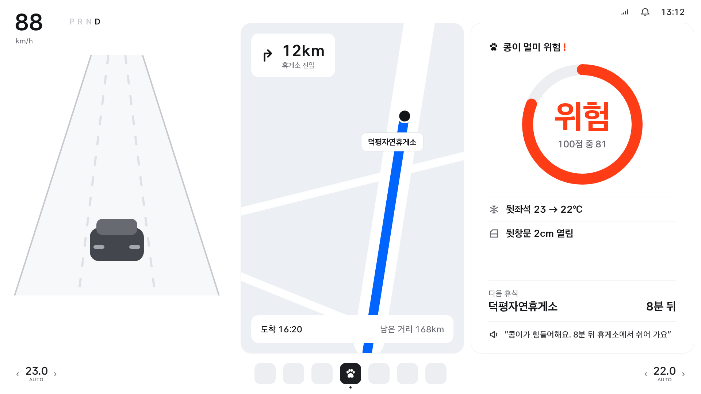
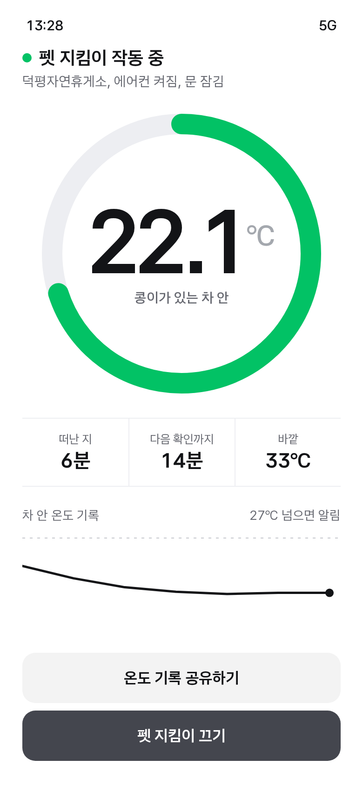

반려견이 타면 차가 먼저 챙기는 펫 드라이브
달리는 동안 멀미를 부르는 조건을 재고, 정차 중에는 사실로 안심시키는 Pleos Connect 앱
사용 SDKVehicleNaviHelperTextToSpeechSpeechToTextFusedLocation
조회·내비·음성 지금 사용 가능set-제어 제어 SDK 공개 시 확장
핵심주행 중 멀미 위험을 계산하고 차가 대응해요
register-brake-pedal-status급가감속 감지SpeechToText보호자 음성 “콩이 헥헥거려” → 점수에 반영set-window-positionset-hvac-dual뒷창문 환기, 뒷좌석 공조TextToSpeechNaviHelper음성 코칭, 반려견 휴게소 경유지

정차켜기 전에 차 상태를 읽어요
get-hvac-temperature-current차 안 온도get-fuel-percent연료·배터리로 유지 가능 시간 계산get-current-seat-occupancy뒷좌석 탑승 확인

작동바깥 사람에게 약속 대신 사실을 보여 줘요
set-hvac-powerset-door-lock22℃ 유지, 문 잠금set-ambient-light-brightness-color무드등으로 밖에 상태 표시- 차 안 온도 1분 기록 → 오해받으면 증거로

위험에어컨이 꺼지면 차가 스스로 대응해요
set-window-positionset-cabin-light-switch환기, 반려견이 밖에서 보이게- 서버 → 보호자 반복 전화, 안심번호 표시

보호자휴대폰으로 실시간 확인
- 1분마다 온도 기록
- 오해를 받으면 기록으로 해명
SpeechToText도착 후 컨디션 기록
이미 구현한 것
- 멀미 위험 점수·대응 정책 로직 (Java)
- 테스트 23개 통과, 주행 기록 재생 데모
- Pleos SDK 앱, Pleos 에뮬레이터 실행
- 시뮬레이터, 시연 영상
기존 펫 모드와 무엇이 다른가
- 테슬라·현대·기아의 펫 모드는 정차 중 기능, 우리는 주행 중 멀미까지
- 운전 습관, 공조, 창문, 휴식 경로를 함께 조정해요
- 바깥 사람에게 센서로 확인한 사실만 보여 줘요
- Pleos 앱이라 탑재 차종이 늘면 함께 넓어져요